Absolute ADAS · Internal runbook
Filing & paying the quarterly Washington excise tax return
What this is: Washington has no state income tax. Instead we pay B&O (business & occupation) tax on our gross receipts, reported on one line: Service and Other Activities. We file and pay electronically in My DOR every quarter. The whole job: take one number from Zoho Books, put it on one line in My DOR, leave everything else at 0.00, and pay by ACH Debit.
Deadlines
| Quarter | Months | Return & payment due | Our target |
|---|---|---|---|
| Q1 | Jan – Mar | April 30 | April 20 |
| Q2 | Apr – Jun | July 31 | July 20 |
| Q3 | Jul – Sep | October 31 | October 20 |
| Q4 | Oct – Dec | January 31 | January 20 |
If a due date falls on a weekend or holiday, it moves to the next business day (for example, Q4 2026 is due Monday, Feb 1, 2027). My DOR shows the exact due date at the top of every return. Submit by 11:59 p.m. Pacific on the due date.
1Zoho Books: get the quarter's total
- In Zoho Books, click Reports, then Payments Received under Report Category.
- Open the report named Payments Received.
- Set Date Range: Previous Quarter and run the report.
- Check the dates under the company name (e.g., Q3 = 07.01 to 09.30).
- Export → PDF and save it. This is our backup.
- Scroll to the bottom and write down the TOTAL: $
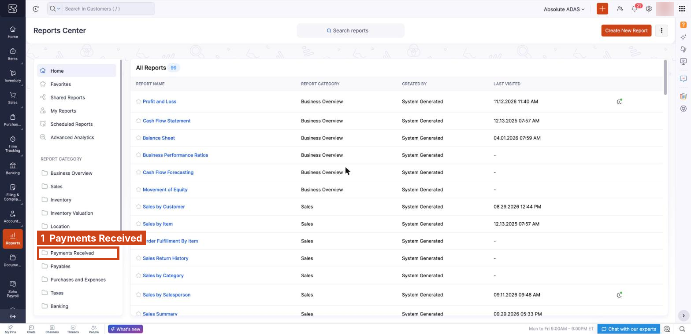
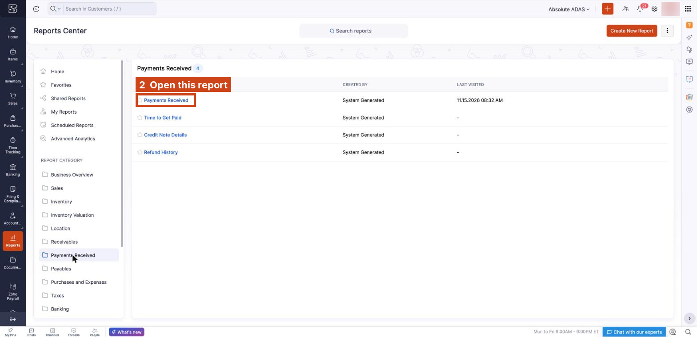
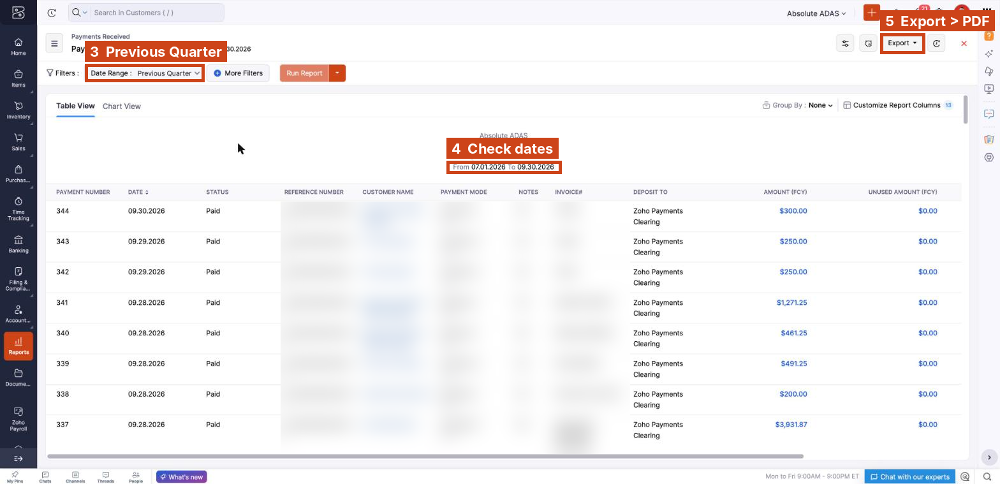
2My DOR: log in & open the return
- Go to secure.dor.wa.gov and sign in with your own SecureAccess Washington login (Mark adds you; never share logins).
- Select ABSOLUTE ADAS LLC and click File return for the quarter you're filing.
- Check the period and due date at the top. The wrong quarter is the most common mistake.
3Select Taxes
- Keep the same classifications as last period and click Next.
- Do not click Add/Delete Tax Classifications without asking Mark.
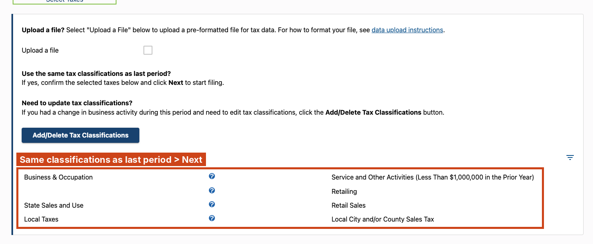
4Business & Occupation
- Enter the Zoho TOTAL in Gross Amount on Service and Other Activities.
- Retailing stays 0.00.
- Tax is calculated automatically (1.5%). No deductions, no credits. Click Next.
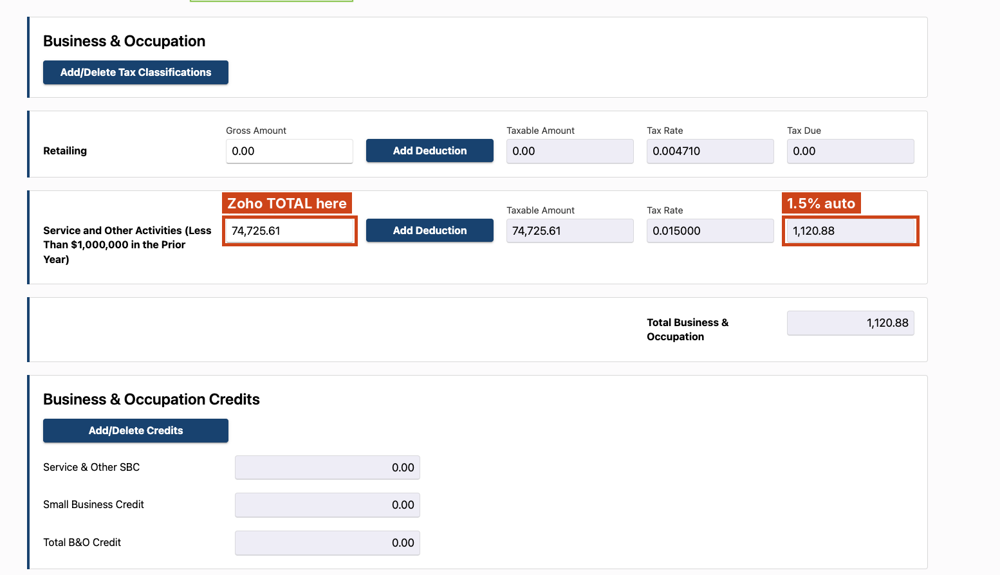
5State Sales and Use & Local Sales
- State Sales and Use: Retail Sales stays 0.00. We don't collect retail sales tax. Click Next.
- Local Sales: Lake Stevens (3109) stays 0.00. The Difference box should read 0.00. Click Next.
- If an invoice ever shows sales tax, stop and ask Mark.
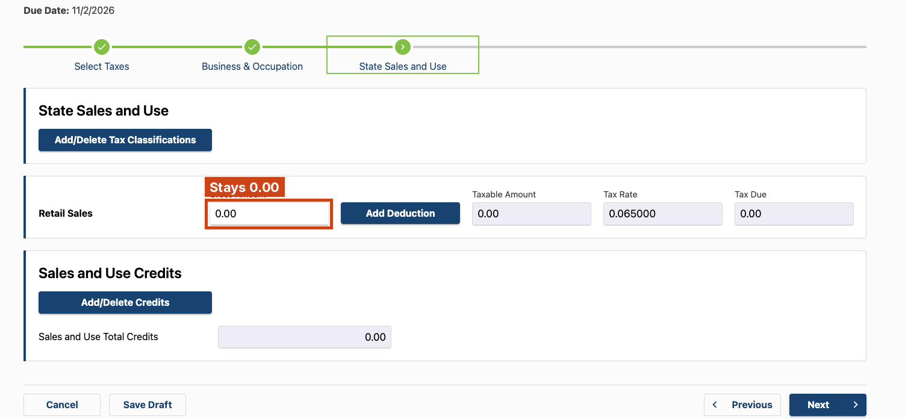
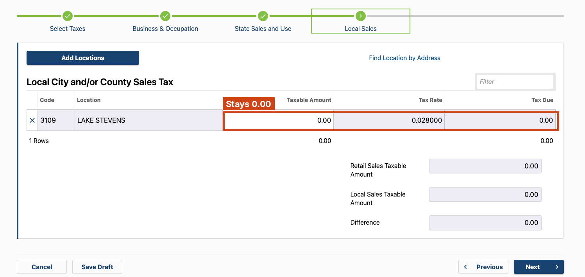
6Summary
- Check the period and the Gross Amount match the Zoho TOTAL.
- Prepared By: your name. Phone: your number.
- E-Mail:
ar@absoluteadas.com - Buyers Sales and Use Preference Addendum: No. Click Next.
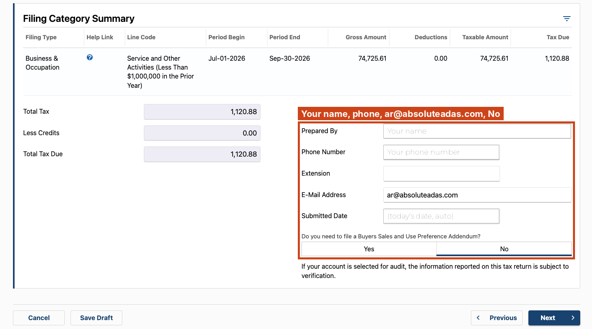
7Return Totals
- Estimated Penalty and Interest should be 0.00. They only appear when the return is late (as in this example).
- Request Penalty Waiver: don't check it. Ask Mark.
- Click Next.
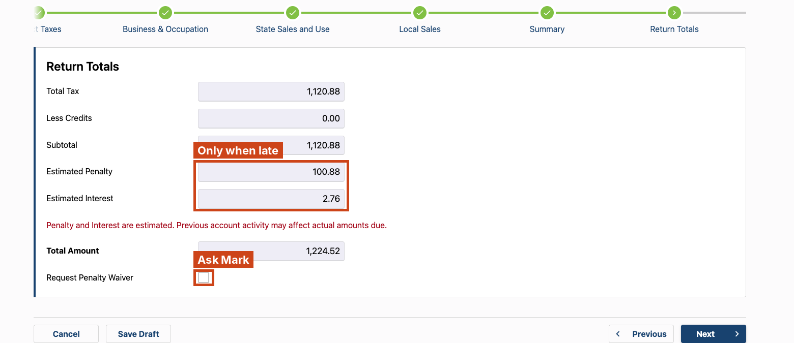
8Payment
- Payment Method: Bank Account (ACH Debit). It's free.
- On the Payment screen, confirm our bank account and set the payment date on or before the due date.
Never use Credit or Debit Card (2.96% fee, $1 minimum) or No Payment (more penalties and interest).
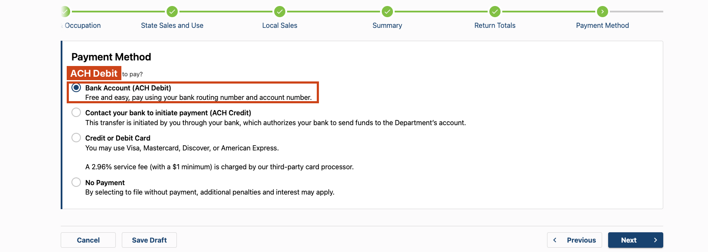
9Review & Submit
- Check: Total Amount Due, Payment Method (ACH Debit), Payment Effective date (on or before the due date), and Payment Amount (equals the total due).
- Click Submit once. Never pay the same return a second way, because that makes a duplicate payment.
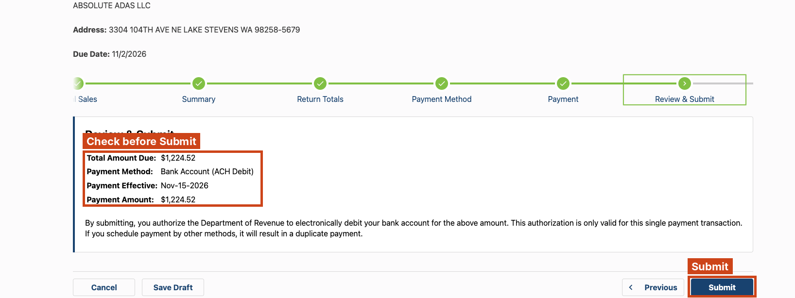
10Save proof & close out
- Confirmation number:
- Download the filed return as a PDF and save it with the Zoho Payments Received PDF for the quarter.
- 1–2 business days after the payment date, confirm the debit cleared the bank account.
- Tell Mark it's done.
Penalties: why the deadline matters
| When the tax is still unpaid… | Penalty |
|---|---|
| After the due date | 9% |
| After the last day of the following month | 19% |
| After the last day of the second month | 29% |
Interest is added on top, and the minimum penalty is $5.
Always file on time, even if there were no receipts (file a no-business return), and even if there's a problem paying. Tell Mark right away.
Good to know
The Service and Other Activities rate depends on our prior-year income: 1.5% under $1 million, 1.75% from $1 million to under $5 million. My DOR picks the right line and rate. If the line name ever changes on Select Taxes, check with Mark before filing.
Not on this return
| Filing | Agency |
|---|---|
| Unemployment insurance, Paid Family & Medical Leave, WA Cares | Employment Security Dept (ESD) |
| Workers' comp quarterly report | Labor & Industries (L&I) |
| Federal estimated tax payments | IRS |
| Idaho sales/income tax for Idaho work | Idaho State Tax Commission |
Each has its own system and deadlines and is covered separately.
Who to ask
- First: Mark.
- DOR Telephone Information Center: 360-705-6705 (Mon–Fri 8–5 PT; closed Wed 8–9 a.m.)
- My DOR / e-file help: 360-705-6709